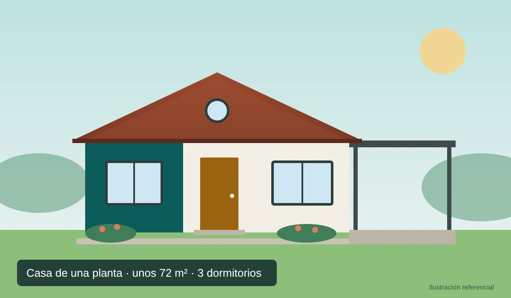

Unos 72 m² construidos, en una planta
- 3 dormitorios y 2 baños
- Sala, comedor y cocina
- Garaje y patio propio
- Lote individual de unos 200 m²
Casas de interés social en Santo Domingo de los Tsáchilas, pensadas para crecer contigo: casa de una planta y tres dormitorios en terreno propio, pensada para financiarse con crédito hipotecario de tasa preferencial, sujeto a calificación.
Cada casa se ubica en su propio lote de 200 m². Eso deja espacio para patio, parqueo y una futura ampliación, algo poco común en vivienda de interés social.
Esquema conceptual de distribución. La implantación definitiva depende de la aprobación municipal.
Distribución referencial. Los planos y acabados finales se confirmarán con la aprobación municipal.


Este es el proceso previsto. Los montos y requisitos exactos se confirmarán al abrir la preventa.
Referencias: crédito Credicasa del BIESS al 2,99 % anual para vivienda nueva con avalúo de hasta USD 71.504,70; crédito de vivienda de interés social al 4,99 % anual para viviendas de hasta USD 85.796; bono de vivienda de hasta USD 10.122 para viviendas de hasta USD 65.070 (2026). Las condiciones dependen de cada programa, de la calificación del hogar y del registro del proyecto.
Vía Quinindé, km 5, sector del Mercado Mayorista Municipal, Santo Domingo de los Tsáchilas, Ecuador.
Abrir en Google MapsPreferimos que sepas en qué punto estamos.
| Terreno y lotes | En trámite regularización de planos |
|---|---|
| Cotizaciones de constructores | Abiertas ver pestaña «Buscamos constructores» |
| Calificación como vivienda de interés social | Pendiente |
| Permisos de construcción | Pendiente |
| Venta de unidades | Aún no iniciada solo lista de interés |
22 casas de una planta y unos 72 m² en lotes de 200 m², en Santo Domingo de los Tsáchilas. Queremos comparar costo por metro cuadrado y plazo entre varios constructores antes de decidir.
Enviar mi cotizaciónRecibimos propuestas de forma continua. Enviar una cotización no genera obligación para ninguna de las partes.
22 casas de una planta desde USD 62.000, pensadas para el crédito del BIESS al 2,99 % y el bono de vivienda. Buscamos corredores con licencia y referidores de la zona.
Quiero vender este proyecto